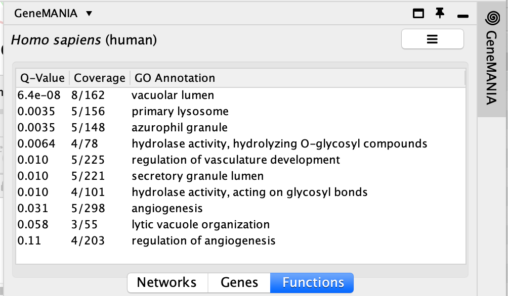
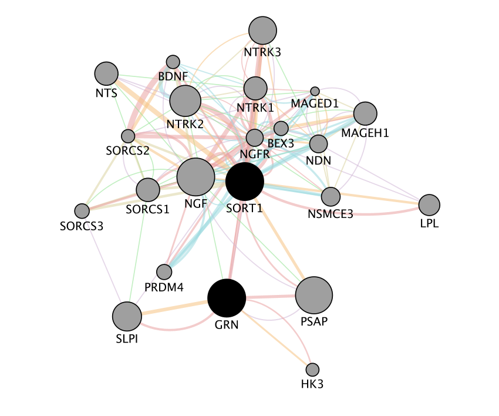
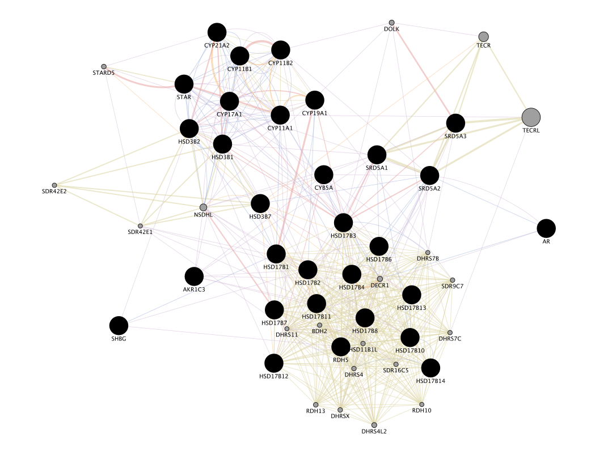
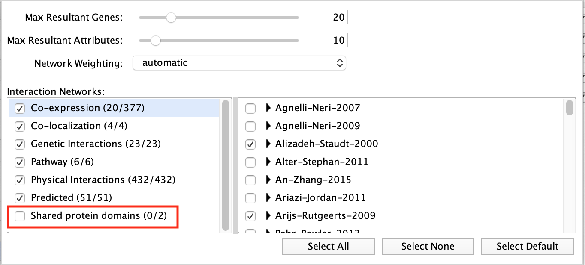
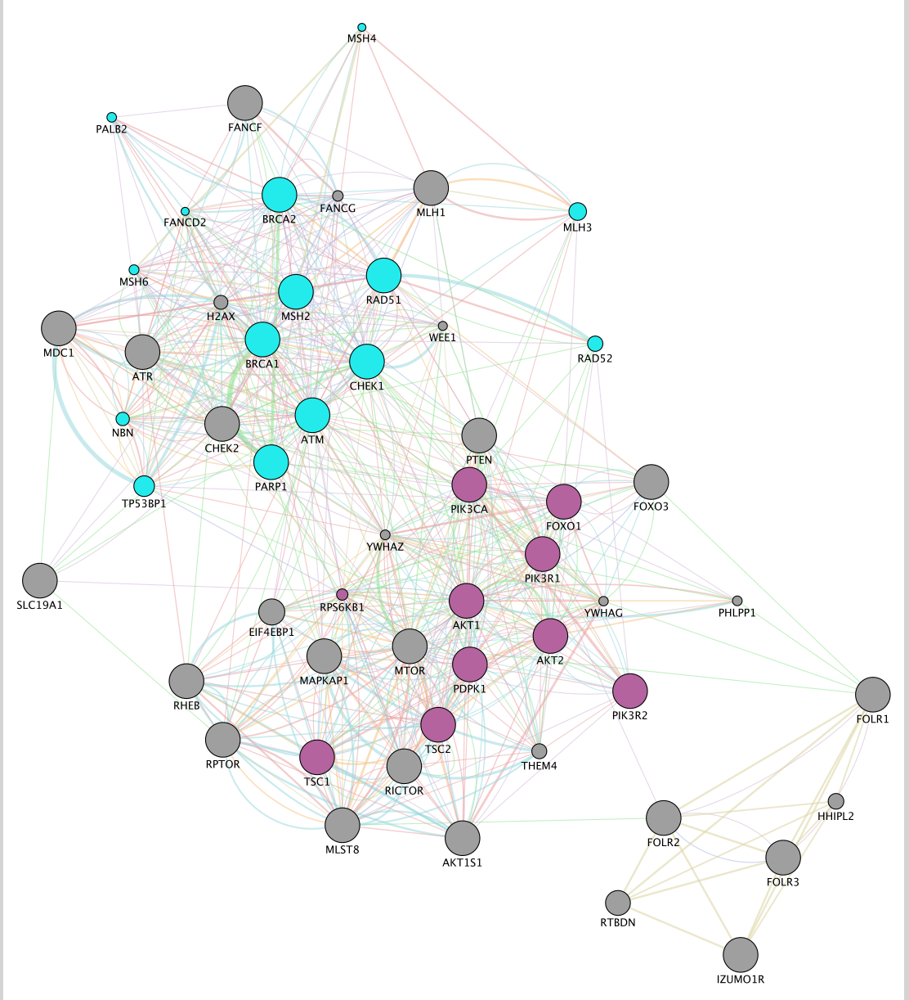
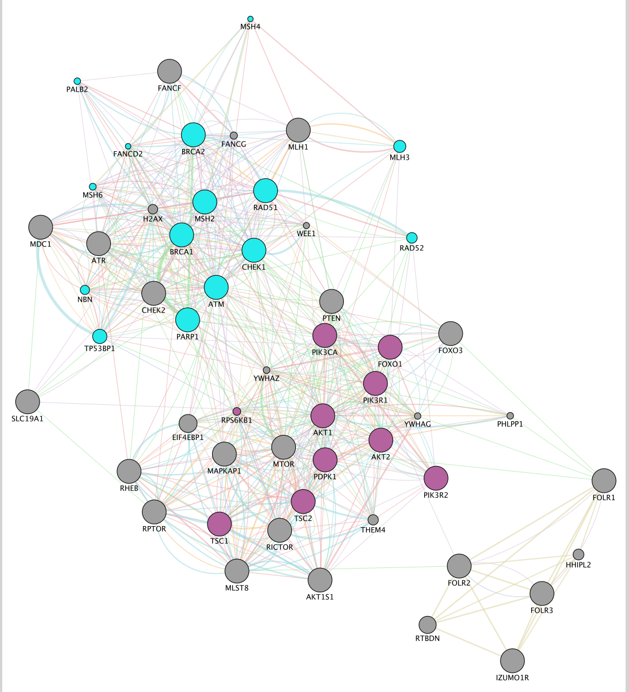
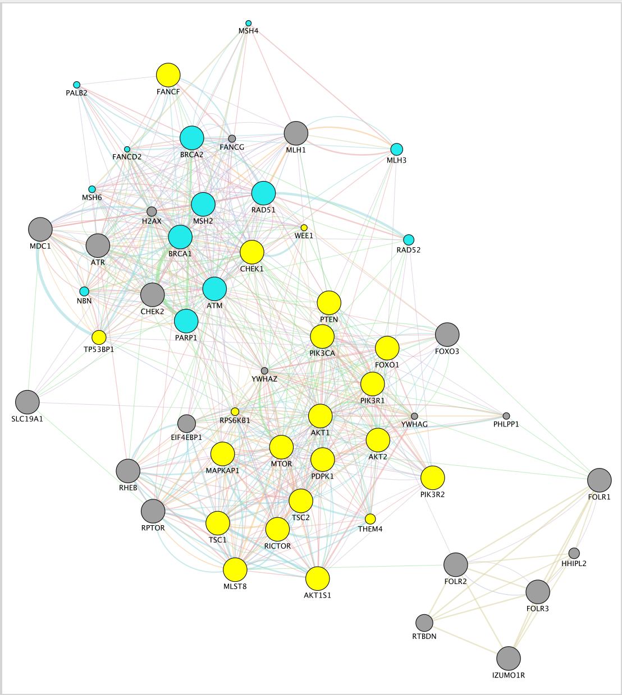
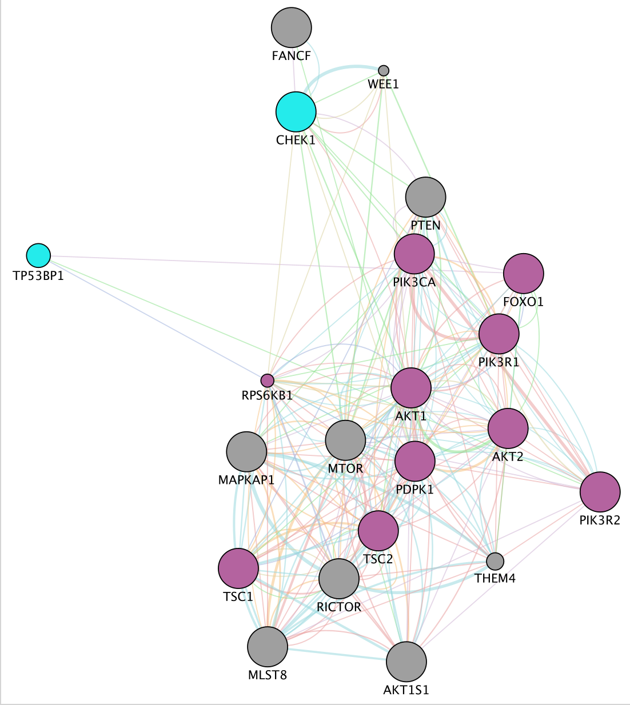
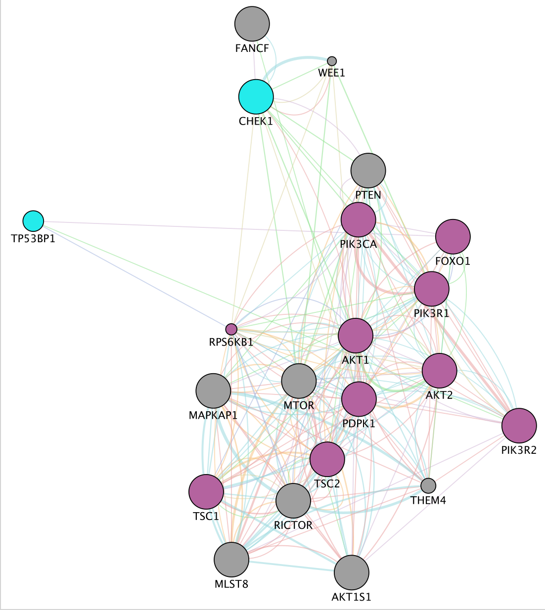

Module 6 Lab: GeneMANIA (Cytoscape version)
This work is licensed under a Creative Commons Attribution-ShareAlike 3.0 Unported License. This means that you are able to copy, share and modify the work, as long as the result is distributed under the same license.
By Quaid Morris and Veronique Voisin
Goal of this practical lab
Create GeneMANIA networks starting from a single gene to predict its function or starting from a gene list. Explore and understand the main output features of GeneMANIA such as the network composition or the enriched functions. This practical consists of 3 exercises.
Before starting the exercises,download the files:
Right click on link below and select “Save Link As…”.
Place it in the corresponding module directory of your CBW work directory.
Network layouts are flexible and can be rearranged. What you see when you perform these exercises may not be identical to what you see in the tutorial, or what you have seen other times that you have performed the exercises. Exact layouts and predictions can also be affected by updates to the networks database that GeneMANIA uses. However it is expected that the network weights and predicted genes will be similar to those shown here.
EXERCISE 1: QUESTIONS AND STEPS TO FOLLOW
- Imagine that you are interested in exploring the function of the human GRN gene: GRN returned as the strongest hit from your omics experiment but not many information about this gene is available in functional databases. Use GeneMANIA to identify its predicted function as well as potential interaction partners.
Skills: GeneMANIA Single Gene search; Navigating Search Results; Exploring available Genes features; Rerun a new analysis using a single gene or multiple genes query from the network.
STEPS
Open Cytoscape.
Locate the GeneMANIA search window located on the left side in Control Panel.
In the search window, ensure that the model organism is set to Homo sapiens
 .
.Enter the following gene: GRN
Click on the search icon
 and wait for the results.
and wait for the results.

- When your search results load, examine the network. Genes you searched with are indicated in black, related genes added by GeneMANIA are represented in gray, and colored links represent the interactions that connect the nodes (genes).

zoom in and zoom out using trackpad or mouse scrolling up and down.
- Locate the Functions summary tab in Results Panel. What are the functions significantly associated with this network? GRN is the central node of this network: which function would you predict for GRN? How well did GeneMANIA perform (hints: use GeneCards (http://www.genecards.org/) , PubMed (http://www.ncbi.nlm.nih.gov/pubmed/))?

EXERCISE 1 ANSWERS
Question What are the functions significantly associated with this network? Answer the list of the functions associated with the network are listed in the above screenshot. “lysosomal function”, “vacuolar lumen”, “vacuolar part” are significant under a FDR threshold less than 0.0001.
Question GRN is the central node of this network: which function would you predict for GRN? Answer : a function related to lysosome and vacuole
Question How well did GeneMANIA perform (hints: use GeneCards (http://www.genecards.org/) , PubMed (http://www.ncbi.nlm.nih.gov/pubmed/))? Answer The top functions predicted by GeneMANIA for GRN were related to lysosome and vacuole. A pubmed search could confirm these results: “We experimentally verified that granulin precursor (GRN) gene, whose mutations cause frontotemporal lobar degeneration, is involved in lysosome function.” (Transcriptional gene network inference from a massive dataset elucidates transcriptome organization and gene function. Belcastro et al. Nucleic Acids Res. 2011 Nov 1;39(20):8677-88. 2011. PMID:21785136)
Locate the gene with the strongest association with GRN.
this gene is the largest node on the network.
Answer is SORT1
Re-run an analysis by adding SORT1, HSPG2 to the search. Type ‘SORT1’ and ‘HSPG2’ in the search box that already contains ‘GRN’ (one gene per line). Click on the search button. Which functions are associated with this new network?


- Save the network as an image by clicking on ‘File’, ‘Export’, ‘Network to Image…’ and setting the “Export File Format” to “PDF(*.pdf)”.

Notes about biological interpretation of the results:
A paper describing the interaction between GRN and SORT1 and demonstrates how finding related genes could be relevant for elaborating therapy:
Targeted manipulation of the sortilin–progranulin axis rescues progranulin haploinsufficiency. Lee et al. Hum Mol Genet. 2014 March 15; 23(6): 1467–1478. Published online 2013 October 26. doi: 10.1093/hmg/ddt534. PMCID:PMC3929086 “Progranulin (GRN) mutations causing haploinsufficiency are a major cause of frontotemporal lobar degeneration (FTLD-TDP). Recent discoveries demonstrating sortilin (SORT1) is a neuronal receptor for PGRN endocytosis and a determinant of plasma PGRN levels portend the development of enhancers targeting the SORT1–PGRN axis. We demonstrate the preclinical efficacy of several approaches through which impairing PGRN’s interaction with SORT1 restores extracellular PGRN levels. “

GM11
EXERCISE 2: QUESTIONS AND STEPS TO FOLLOW
To start this exercise, you need to download the 30_prostate_cancer_genes.txt file from the course wiki and save it on your computer.
For this exercise, you are working with a list of 30 prostate cancer genes. This list can be downloaded after the workshop from the cBioPortal website (http://www.cbioportal.org/) under the download section, user defined list. The cBioPortal for Cancer Genomics stores genomic data from large scale, integrated cancer genomic data sets. During this exercise, you will explore the types of networks that have been used to create the GeneMANIA network from the prostate cancer gene list and you will see how changing input parameters can affect the results. The last step of the exercise consists of uploading a custom network which is a list of genes that are positively correlated with CYP11B1 in mRNA expression data of 94 prostate cancer samples (http://www.cbioportal.org/) .
Skills: GeneMANIA search using a gene list; Navigating Search Results; Exploring Networks and advanced options; Uploading a custom network.
STEPS
Open Cytoscape.
Locate the GeneMANIA search window located on the left side in Control Panel.
Copy and paste genes in the file 30_prostate_cancer_genes.txt. Make sure that the parameter ‘Max resultant genes’ is set to ‘20’ by clicking on the menu button
 at the right side of the search box and selecting ‘Customise advanced options’.
at the right side of the search box and selecting ‘Customise advanced options’.Click on the search icon
and wait for the results.

check that the parameter ‘Max resultant genes’ is set to ‘20’:
- When your search results load, examine the network. Genes you searched with are indicated in black, related genes added by GeneMANIA are represented in gray, and colored links represent the interactions that connect the nodes (genes). Move nodes around by selecting them with a mouse to investigate how they are connected.

- Click any link (edge) connecting two nodes to highlight information about it. The information about the interaction is display in the Edge Table located in Table Panel (at the bottom) in the networks and data type columns. Note: Clicking on an edge between 2 nodes will display information about all interaction networks that connect these 2 nodes. It indicates the reference (publication) for these interactions. The colors indicate the type of interaction (co-expression, shared protein domains, co-localization, physical interactions and predicted).

- Locate and expand the ‘Networks’ summary tab in Results Panel (on the right) and look at what data has been used to create the network and predictions. Note that Co-expression (purple colored lines, weight over 25%) and Shared protein domains (lightgold colored lines, weight over 30%) influence the results the most, but Co-localization (blue colored lines), Physical interactions (salmon colored lines) and Predicted (orange) data are also included. At the top of the Networks summary tab, use the menu button and try Expand “All, then “Top-Level” and “None” to get information about the sources of the different networks.

- Highlight all connections corresponding to each network by clicking the name of each network category. Click on “Shared protein domains” and see which genes are connected by predicted protein protein interaction. You can do the same for “Co-localization” , “Co-expression” and “Physical interactions”.
these observations of the number of connections make it easier to understand why co-expression and shared protein domains get the higher percent weight on this network: they are helping to connect more genes than physical interactions and predicted; A higher weight means that this network helped more to find related genes.


- Locate the Functions summary tab and look at what functions were significantly enriched in this list of prostate genes.
The top pathways with the strongest enrichments are: “cellular hormone metabolic process” with 23 genes in the list overlapping with this pathway. The FDR is equal to 1.2e-40.

- “Shared protein domains” is an important part of the network. What would be the GeneMANIA results if we don’t include this source when we run GSEA? Go back to the ‘Network’ tab on the right side of the Cytoscape window to fin d the GeneMania search bar. Click on the option menu button which is located at the right of the search box. Uncheck ‘Shared protein domains’ and click on a point outside the box to close it. Click on the search icon . Explore the results.
Answer If “shared protein domain” is removed, the relationships between the nodes are from the Co-expression, Co-localization, Predicted and Physical interactions networks. The genes added to the network are different compared to the first network created with “Shared protein domain”.


- Locate the Functions summary tab in Results Panel and look at what functions were significantly enriched with these new settings.
Answer With the new settings, “hormone biosynthetic process” is the new top enriched pathway.

- Try to modify additional parameters like Max Resultant Genes or Network Weighting and look at how the changes you made influenced the results.
EXERCISE 3: QUESTIONS AND STEPS TO FOLLOW
To start this exercise, you need to download the Mixed_gene_list.txt file and save it on your computer.
For this exercise, you are working on a gene list created by combining 3 user defined gene lists available from the cBioportal (http://www.cbioportal.org). It contains genes implicated in the DNA damage response, the PI3K-AKT-mTOR signaling pathway and Folate transport. This list is representative of a gene list obtained from transcriptomics data. During this exercise, we will first characterize our gene list based on functions and then we will add potential drug and microRNAs targeting genes in the network, and we will save the report.
Skills: GeneMANIA search using a gene list; Navigating Search Results; Exploring Functions; Adding attributes; Create a report.
STEPS
Open Cytoscape and locate the GeneMANIA search window located on the left side in Control Panel.
make sure that GeneMANIA is selected and not String.
In the search window, ensure that the model organism is set to Homo sapiens
.Copy and paste genes in the file Mixed_gene_list.txt. Click on the search icon
and wait for the results. Explore the network.

- Locate the Functions summary tab in Result Panel and look at functions returned by GeneMANIA.

- In the functions summary tab, check some functions to color genes included in these functions. To follow this tutorial, you can for example color the “response to insulin” , “DNA recombination” functions.
You need to scroll down to found DNA recombination as this pathway has an FDR greater than the one for “response to insulin”.
To color genes:
Go to Control Panel tabs located on the right side of the Cytoscape window and select the Style tab.
* In the Node panel, expand the Fill Color tab.
* Set Column to annotation name.
* Locate “DNA recombination”.
* Double click on the white space at the right side of the box and click on the 3 dots  . A Colors box appears.
* Choose a color of your choice and click on OK.
* Locate “response to insulin”. Double click on the white space at the right side of the box and click on the 3 buttons menu. A Colors box appears.
* Choose a color of your choice and click on OK.
. A Colors box appears.
* Choose a color of your choice and click on OK.
* Locate “response to insulin”. Double click on the white space at the right side of the box and click on the 3 buttons menu. A Colors box appears.
* Choose a color of your choice and click on OK.

 

- Locate our favorite gene PDPK1 on the network. Click on the icon First Neighbor of Selected Nodes
 . It will highlight this gene and all its connections. Click on the icon From Selected Nodes, all Edges
. It will highlight this gene and all its connections. Click on the icon From Selected Nodes, all Edges  to create a subnetwork.
to create a subnetwork.
copy “PDPK1” in the search box and the node will be highlighted in yellow.

 

SOME DEFINITIONS:
What are the networks: Definition of the types of interaction:
Shared domains: Protein domain data. Two gene products are linked if they have the same protein domain. These data are collected from domain databases, such as InterPro, SMART and Pfam.
Co-localization: Genes expressed in the same tissue, or proteins found in the same location. Two genes are linked if they are both expressed in the same tissue or if their gene products are both identified in the same cellular location.
Co-expression: Gene expression data. Two genes are linked if their expression levels are similar across conditions in a gene expression study. Most of these data are collected from the Gene Expression Omnibus (GEO); we only collect data associated with a publication.
Predicted: Predicted functional relationships between genes, often protein interactions. A major source of predicted data is mapping known functional relationships from another organism via orthology.
What is defined by evidence sources?:
- Evidence sources are the information contained in the multiple databases that GeneMANIA uses to establish interaction between two genes.
Network:
Node : circle representing the genes
Edge: line that links two nodes and represent an interaction between two genes (multiple lines correspond to multiple sources
Node size: Mapped to gene score, i.e. the degree to which GeneMANIA predicts the genes are related
Thickness of edge: Strength/weight of interaction
Layout : The layout is different each time so the user can request the layout run multiple times until the user is satisfied with the result.
in Networks tab:
- Percent weight (score) : a higher weight means that this network helped more to find related genes.
in Functions tab :
FDR : False discovery rate (FDR) is greater than or equal to the probability that this is a false positive.
Coverage : (number of genes in the network with a given function) / (all genes in the genome with the function)
In advanced options:
Network weighting? GeneMANIA can use a few different methods to weight networks when combining all networks to form the final composite network that results from a search. The default settings are usually appropriate, but you can choose a weighting method in the advanced option panel. (more details at http://pages.genemania.org/help/).
Related genes : are genes added by GeneMANIA in addition to the genes from the query. It helps to grow the network and then to predict function of the query gene(s).
The attributes represent the differences sources of evidence that can be used to build the network.
Notes :
prostate cancer gene list is “AKR1C3 AR CYB5A CYP11A1 CYP11B1 CYP11B2 CYP17A1 CYP19A1 CYP21A2 HSD17B1 HSD17B10 HSD17B11 HSD17B12 HSD17B13 HSD17B14 HSD17B2 HSD17B3 HSD17B4 HSD17B6 HSD17B7 HSD17B8 HSD3B1 HSD3B2 HSD3B7 RDH5 SHBG SRD5A1 SRD5A3 STAR”.
mixed gene list is AKT1 AKT1S1 AKT2 ATM ATR BRCA1 BRCA2 CHEK1 CHEK2 FANCF FOLR1 FOLR2 FOLR3 FOXO1 FOXO3 MDC1 MLH1 MLST8 MSH2 MTOR PARP1 PDPK1 PIK3CA PIK3R1 PIK3R2 PTEN RAD51 RHEB RICTOR RPTOR SLC19A1 TSC1 TSC2
look at GeneMANIA help pages when you run an analysis on your own after the workshop: http://pages.genemania.org/help/.